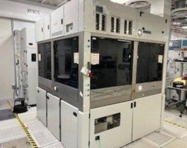
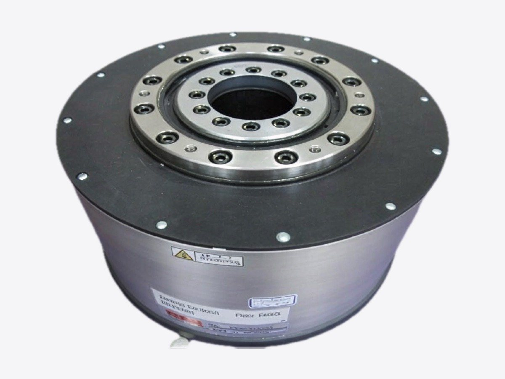
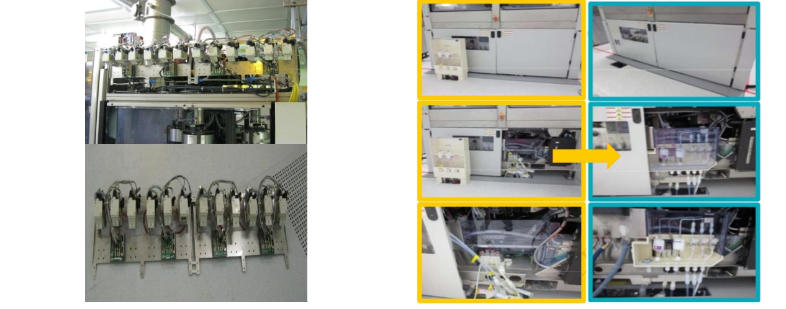
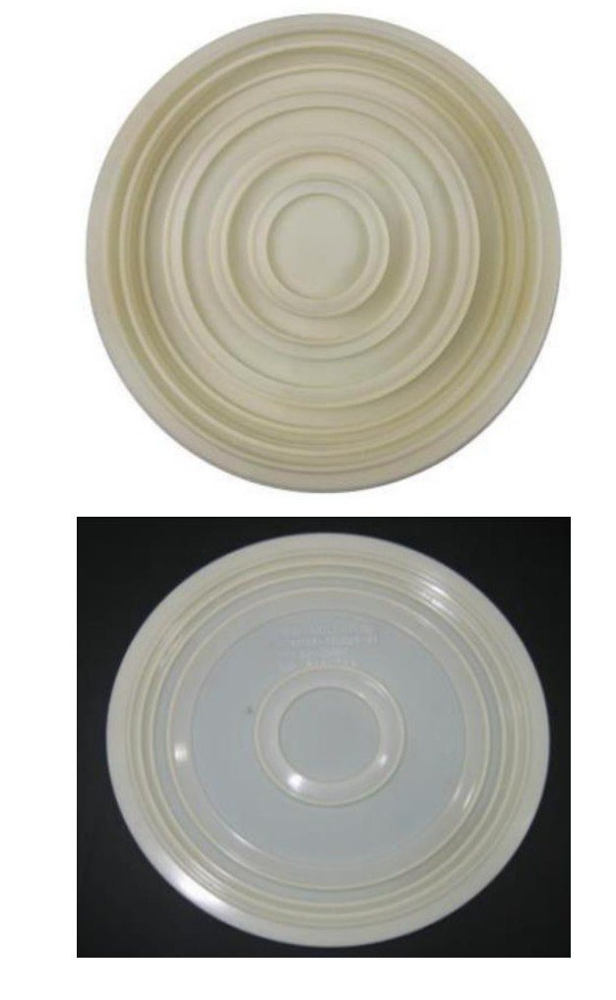
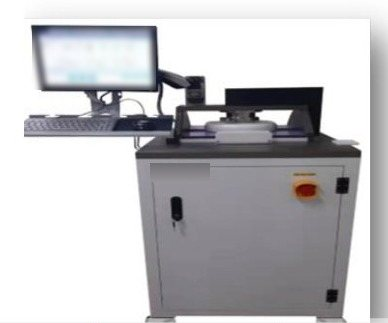
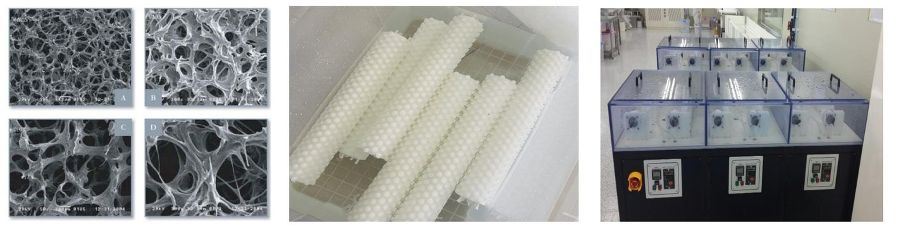

CMP
CMP 設備服務、維修、耗材及改造，一站式對接。
適用於 AMAT Reflexion／Mirra、EBARA F-REX（100～300mm）。從設備保養到研磨頭・馬達維修、耗材及智慧化改造。
CMP 設備服務
覆蓋 100mm～300mm CMP 設備
支援 CMP 設備的安裝、搬遷、定期保養與翻新。

300mm CMP 設備
- AMAT Reflexion / Reflexion LK / LK-P
- EBARA F-REX300 / 300S / 300S2 / 300X
100～200mm CMP 設備
- AMAT Mirra (OnTrak · DNS · Mesa · 3400)
- EBARA F-REX200 · EPO222 · EPO223
- IPEC 472 · Accretech · Lam Teres
服務內容
- 拆機、搬遷、安裝調校與故障排除
- 設備改造
- 月度、季度、年度定期保養（PM）
- 研磨頭重建
- 零組件維修與供應
CMP 服務
CMP 服務範圍
可維修 CMP 驅動馬達、研磨載具齒輪及模組 ― 維護需求較高的領域。
| 設備 | 模組／部件 | 服務 |
|---|---|---|
| AMAT Reflexion LK | 研磨盤・研磨頭・修整器驅動馬達 | 維修・重繞・測試 |
| EBARA F-REX300X | 頂環・轉盤・修整器驅動馬達 | 維修・重繞・測試 |
| EBARA F-REX300S2 | 頂環・轉盤・修整器驅動馬達 | 維修・重繞・測試 |
| AMAT & EBARA | PC（研磨載具）齒輪・傳動系 | 維修・更換 |
| EBARA CMP | DDF3 模組 | 大修・維修 |
可根據需求擴展至其他 CMP 模組及其他製程設備。

重點項目驅動・主軸馬達・PC 齒輪・DDF3
AMAT Reflexion LK
研磨盤・研磨頭・修整器驅動馬達
EBARA F-REX300X／300S2
頂環・轉盤・修整器馬達系列
PC 齒輪・DDF3
傳動系維修・更換，DDF3 大修
CMP 核心部件
CMP 核心部件翻新再生

- 零組件供應・再生・維修研磨頭・主軸・機械手臂・驅動器・旋轉接頭・齒輪箱
- 設備服務安裝・再生・維修・定期保養・改造
設備改造
CMP 設備改造・智慧化
- 1壓力檢測・資料擷取・自動報警（EBARA）
- 2DIW・藥液洩漏檢測（AMAT／EBARA）
- 3藥液流量監控・自動報警
- 4排氣自動風門控制
- 5自清潔系統（設備自動清洗）
- 6溫度檢測・自動報警（AMAT／EBARA）
- 7CCTV 攝影機設備監控（AMAT／EBARA）
- 8訂製漿料歧管
- 9訂製連接埠伺服器電源
- 10研磨頭主軸罩・漿料箱內置・UPA 移位

從機械結構設計到研磨液輸送系統，均可按客戶及機台訂製。設備改造遵循貴司 MOC（變更管理）流程，經貴司事先批准後方予實施。
開發（技術合作夥伴）
CMP 耗材與設備開發（技術合作夥伴）
從保持環、隔膜、PVA 刷到測試設備，由技術合作夥伴開發和生產，適用於 6／8／12 英吋。



保持環 ― 12 道生產工序
- 1原材料來料檢驗
- 2粗車
- 3精車
- 4螺孔加工
- 5二次精車
- 6銑槽加工
- 7銷軸組裝
- 8環氧膠結構灌注
- 9半成品檢驗
- 10預拋光
- 11成品終檢
- 12清洗包裝
隔膜開發流程
- 方案評審與規格確認
- 模具設計與製造
- 實驗室測試與可靠性分析
- 現場跑片驗證
- 製程管控下的規模量產
服務範圍、交期及保固條件按項目逐一確認，並在報價中列明。維修品及翻新品並非 OEM 原廠認證產品。如需使用非原廠替換零組件，將在報價時明確說明，並在取得貴司批准後方可使用。文中所列廠商名稱及型號僅用於標明對象設備，並不代表與相關廠商存在合作或授權關係，亦並非 OEM 原廠服務。文中所列公司名稱及產品名稱均為各公司的商標或註冊商標。